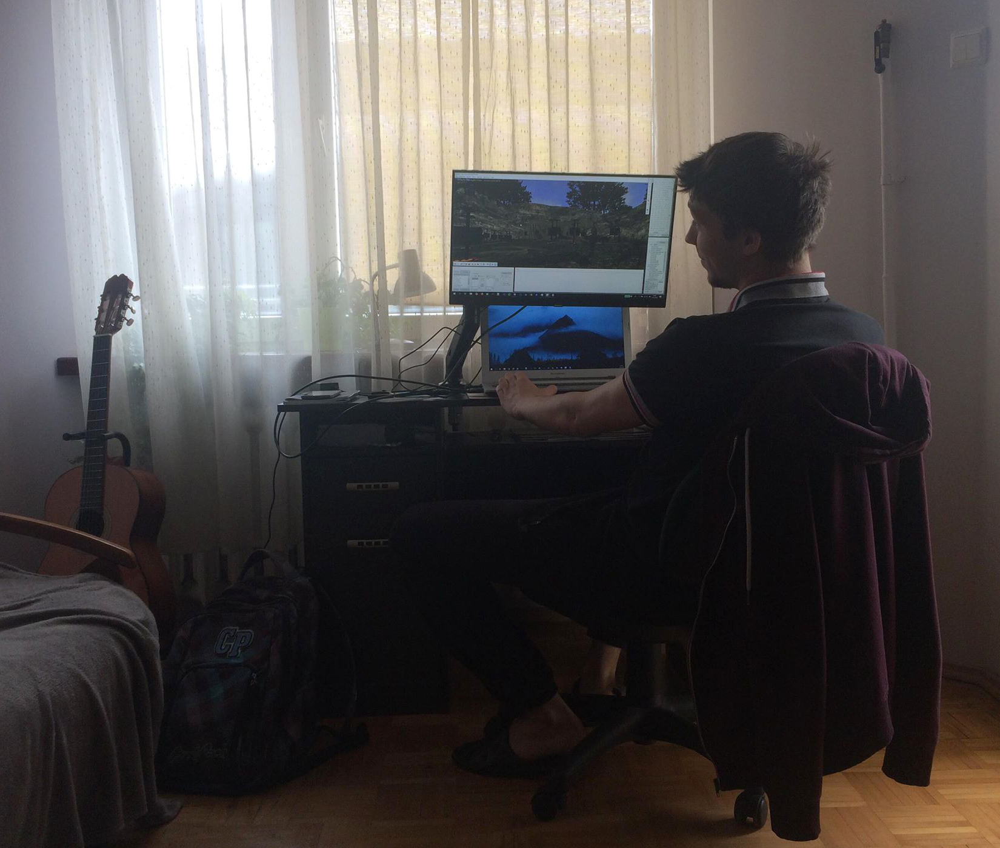

Autor i historia Ucieczki
Modyfikacja została stworzona przez Bartłomieja Grochowskiego o nicku 'TheKetrab'. Biedak tworzył tego moda przez 5 lat. Początkowo modyfikacja nazywała się 'Armie zniechęcenia' (cokolwiek to znaczyło) i opowiadała krótką historię o magnatach ze Starego Obozu, którzy przeżyli i próbują odbić zamek z rąk orków. Ich obóz budowany był z desek nad pieczarą lodowego smoka. Jedyne pozostałości po tamtej fazie produkcji (lata 2011-12) to 'pierścienie wierności'. Wtedy Gomez prosił bohatera o załatwienie trzech pierścieni od Arto, Blizny i Kruka jako dowód zaufania. Została też konwencja nazywania nowych NPC (NASZ_numer_imie) i przedmiotów (ItNa_instancja), wyniesiona z tutoriali czipa17. Niestety, pliki antycznej wersji przypadkiem znikły z komputera i TheKetrab rozpoczął prace od nowa. Najpierw mod był tworzony weekendowo, to znaczy raz na tydzień Bartłomiej dobierał się do komputera z zainstalowanym Gothiciem, słuchał muzyki z Risena 1, wstawiał pojedyncze postacie, dialogi, misje i itemy. Po roku przeniósł się na swój komputer i rozwój modyfikacji znacznie przyśpieszył. W połowie 2015. roku na YT pojawił się krótki gameplay, prezentujący quest z pierwszego rozdziału (Aran - towarzystwo). Jakiś czas później TheKetrab udostępnił wersję Alpha z pierwszym rozdziałem (w celach betatestu). Przez kolejne dwa lata fabuła stawała się coraz bardziej kompletna i w 2017. roku dało się ukończyć cztero-rozdziałową 'Ucieczkę'. Wtedy TheKetrab założył fanpage na Facebooku i rozpoczęły się pierwsze większe betatesty. Okazało się, że mod był przeciętny. Tym większe znaki zapytania nad modem pojawiały się, ponieważ twórca rozpoczął studia, które zżerały czas niemal w stu procentach... Jeden z betatesterów, Fexo, zaproponował, że pomoże rozwinąć akcję i naprawić dziury w logice fabuły. Data premiery szacowana była na styczeń 2019. roku. Po półrocznej współpracy TheKetrab znów został sam i starał się dopracować szczegóły. W październiku 2018. roku mod zyskał nową nadzieję, ponieważ pracami nad Ucieczką zainteresował się Bogu, który specjalizuje się w skryptach znacznie poważniejszych niż pisanie zadań. Rok 2019 był niezwykle trudny, ponieważ kolejne betatesty pokazywały nowe błędy i trzeba było przeznaczać szmat czasu na ich poprawę. Co więcej, TheKetrab zajął się prowadzeniem prac dubbingowych, co trwało 4 miesiące. Powoli wszystko zmierzało ku końcowi, jednakże problemem okazał się być deadline. Autor wyjeżdżał na 100 dni do USA, więc istniały dwa możliwe scenariusze: Zdążymy ukończyć Ucieczkę przed 15 czerwca albo Ucieczka zostanie wydana w październiku. Ta druga opcja była bardzo smutna, ponieważ celem było dać modyfikację graczom na wakacje. Dlatego dzięki mobilizacji wszystkich osób pracujących nad modem, udało się wyrobić w terminie i grę oddajemy w Wasze ręce!'Pamiętam, że wyrwałem się z pracy około 17:30 (czasu Nowego Jorku) i pobiegłem na wysoką górę, która była jedynym miejscem w pobliżu z zasięgiem. Usiadłem na skale i pisałem na telefonie z Maciey'em, który publikował modyfikację. Nie miałem dostępu do komputera, a co dopiero do plików ze swoim modem, dlatego w wersji 1.0 pojawiły się takie przykre bugi jak chociażby nieprzenikające liście drzew albo nieaktywujący się rozdział 4.' ~TheKetrab.
Z powodu nieobecności autora modyfikacji, patronat nad grą przejął bogu i odpowiadał na wszystkie pytania graczy oraz wydawał łatki do ostatecznej wersji moda. W paździeniku rozpoczęto prace nad wersją 1.1. Niestety, brak czasu i poczucie braku sensu odwlekły wydanie modyfikacji w wersji 1.1. Zaplanowano przepisanie gry na nowowydany silnik Union, jednak nie doszło to do skutku. TheKetrab zaktualizował pakiety Ikarus oraz Lego do nowszych, stabilniejszych wersji i po kolejnych trzech miesiącach ciężkiej pracy, gra została opublikowana ponownie.

~ Pamiątkowe zdjęcie - podczas weekendowej pracy nad modem. (2018)
~ Pamiątkowe zdjęcie - podczas weekendowej pracy nad modem. (2018)
Pomocnicy
Bogu
Członek załogi Recovery Team, który zajął się poprawkami skryptowymi, niwelując sporo, bardzo sporo bugów. Poza tym nietrywialne skrypty korzystające z ikarusa/LeGo to jego dzieło. Dzięki temu Panu w 'Ucieczce' można korzystać z Quickslota, FreeAima, czy zmieniać poziom trudności. Gdyby nie bogu, pewnie jakieś 5-10% z Was zakończyłoby grę z powodu bugów albo innych nieprzyjemności.Maciey
Można śmiało powiedzieć, że pomagał przez cały proces tworzenia modyfikacji. W pierwotnej wersji modyfikacji wprowadził kilka postaci i chociaż po kilku latach dialogi i misje zostały znacznie rozwinięte, to osobowości takie jak Miecz czy Dick, przetrwały i wpasowują się w klimat nowej Górniczej Doliny. Maciey zbudował również orkowy obóz na plaży i dokonał kilka poprawek w ZENie.Fexo
Po pierwszym betateście swoje trzy grosze doszucił Fexo, który rozwinął płytkie wątki. Ucieczka z kopalni (to znaczy pierwszy etap rozgrywki) wydłużyła się trzykrotnie, pojawił się wątek na bagnie, kilka misji pobocznych i wiele dialogów zmieniło swoje pierwotne brzmienie. Warto wspomnieć, że początkowo planowana była książka o Willu, bohaterze 'Ucieczki', ale, niestety, Fexo napisał tylko kilka fragmentów...Czudak
Współpraca z tym Panem dodała koloru modyfikacji. Jedyny grafik 2D, jaki pomagał przy modyfikacji. Z jego pomocą zostały dodane nowe tekstury tarcz i nie tylko. Niby współpraca zaczęła się jako pomoc-za-pomoc, ale Czudak wkręcił się bardziej i pomagał bezinteresownie, szybko, pięknie!Simen
Jednen z czołowych krytyków również dodał ducha 'Ucieczce'. Wyłapał gro błędów, dzielił się doświadczeniem z ogrania innych modyfikacji, dokonał wielu popraw w dialogach. Tylko dzięki jego naciskom w grze reputacji nie sprawdzimy w magicznych księgach, a w oknie statystyk...Betatesterzy
- Maciey (6-krotnie)
- Simen (3-krotnie)
- TheKetrab (2-krotnie)
- Mchuable (1-krotnie)
- Fexo (1-krotnie)
Dubbing
| TheKetrab | dobór obsady, dostrajanie głośności, wycinanie kwestii, prowadzenie bazy danych, konwersja, lektor w cutscenkach |
| Duch | modulacja dźwięków w dubbingu orków i szkieletów |
Obsada
| KTO | KOGO | ILE |
| Mchuable | Will | 2000 |
| Mathew 19951 |
Marcos, Ghorim, Brutus, Keroloth, Udar, Donks, Innos, Kopacz(003) | 440 |
| Mariano | Draal, Monastir, Joru, Jan, Hokurn, Ammann, Myśliwy(206), Bandzior(313), Niewolnik(323) | 350 |
| Miłosz Gładych |
Ferros, Phill, Gestath, Renegat(014), Myśliwy(205), Niewolnik(319) | 300 |
| Evil | Vick, Louis, Ayan, Bam, Monk, Frut, Danny | 250 |
| Dominik Michnowicz |
Baal Orun, Hunt, Ted, Grimes, Renegat(013) | 225 |
| Nosalduhr | Rudolf, Goth, Kivo, Rabon, Łowca(123) | 215 |
| Leiwark | Miecz, Sattar, Rethon, Dobar | 215 |
| SnowFox | Kurgan, Daniel, Cappel, Kopacz(001), Duch sekciarza(023), Myśliwy(210), Bandzior(314), Niewolnik(324) | 200 |
| Piotr Charchuta |
Snaf, Jenkins | 170 |
| Vermax | Bryson, Kjorn, Silas, Nod | 160 |
| Volsufrick | Ben, Erak | 150 |
| Bublon | Daryl, Matt, Renegat(011), Strażnik(121), Niewolnik(321) | 130 |
| Oskar Piwowar |
Jehen, Cat-San | 115 |
| OrtegaX | Kirgo, Łowca(108), Niewolnik(320) | 115 |
| Kwami Catcher |
Engor, Drax, Benito, Domenic, Adanos, Bandzior(317) | 110 |
| Wiwi | Jeremiasz, Dymoondo, Bandzior(311), Niewolnik(322) | 100 |
| MrBenson | Netbek, Korth, Peter | 90 |
| Anonimowy Lektor |
Ratford, lektor w filmie na YT | 80 |
| Opol | Renegat(006), Lens, Johny, Strażnik(105), Gerold, Carry | 80 |
| Enteri | Fed, Tabuk, Renegat(012), Duch nowicjusza(026), Strażnik(128), Myśliwy(209), Bandzior(310) | 80 |
| Krzysiek Markiewicz |
Godar, Vachut | 60 |
| Mateusz Król |
Chris, Straznik(407), Nieznany(409) | 50 |
| Stasiek32 | Dick, Perrot | 50 |
| Bartek Goldberg |
Teshinoo, Pallum-Bo, Zombie | 50 |
| Marcin Górski |
Aran, Straznik(406) | 35 |
| Maciej Benedykczak |
Wrzód | 30 |
| Szymon Gwadera |
Robotnik, Strażnik(309) | 30 |
| zaiom | Gobby | 20 |
| Simen | Bandzior(312), Shrat | 15 |